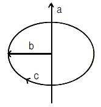
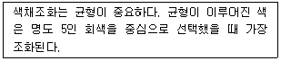
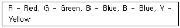
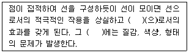
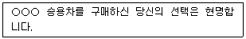

시각디자인산업기사 (2017-05-07 기출문제)
1과목: 색채학
1. 생활과 색채에 관한 설명 중 잘못된 것은?
- 초록색은 심신의 안정을 주므로 휴식공간에 적합하다.
- 색채의 지식은 디자인 전문가들에게만 필요하다.
- 적합한 환경색채는 작업 능률을 향상시킨다.
- 색채의 효과는 정신질환 치료효과를 높이는 방법으로도 활용된다.
(정답률: 95%)

2. 다음은 색채 체계에 대한 내용이다. 잘못된 것은?
- 표색계는 현색계와 혼색계로 나눌 수 있다.
- 현색계는 CIE 표준색표계가 대표적이다.
- 색명에 색상, 명도, 채도의 수식어를 붙여 표현하는 것을 계통색명이라 한다.
- 관습적으로 사용되는 색이름을 관용색명이라 한다.
(정답률: 82%)
3. 다음은 색입체 구성의 개념도이다. 옳은 것은?

- a - 채도, b - 명도, c - 색상
- a - 명도, b - 색상, c - 채도
- a - 명도, b - 채도, c - 색상
- a - 채도, b - 색상, c - 명도
(정답률: 77%)
4. 먼셀의 20색상환에서 보색대비의 연결은?
- 노랑 - 남색
- 파랑 - 초록
- 보라 - 노랑
- 빨강 - 초록
(정답률: 57%)
5. 분광된 빛을 다시 프리즘에 통과시켜도 더 이상 나뉘지 않는 것은?
- 반사광
- 복합광
- 투명광
- 단색광
(정답률: 71%)
6. 표면색(surface color)에 대한 용어의 정의는?
- 광원에서 나오는 빛의 색
- 빛의 투과에 의해 나타나는 색
- 물체에 빛이 반사하여 나타나는 색
- 빛의 회절현상에 의해 나타나는 색
(정답률: 89%)
7. 제품의 색채 마케팅에 관한 설명으로 틀린 것은?
- 적용 소재를 고려한 색을 적용한다.
- 용도와 이미지에 부합하는 색을 적용한다.
- 실용성, 심미성, 조형성을 고려한 색을 적용한다.
- 원경색, 중경색, 근경색을 고려한 색을 적용한다.
(정답률: 86%)
8. 다음은 누구의 조화이론에 대한 설명인가?

- 루드의 색채조화론
- 먼셀의 색채조화론
- 오스트발트의 색채조화론
- 비렌의 색채조화론
(정답률: 42%)
9. 다음 중 진출색의 조건이 아닌 것은?
- 따뜻한 색이 차가운 색보다 더 진출하는 느낌을 준다.
- 어두운 색이 밝은 색보다 더 진출하는 느낌을 준다.
- 채도가 높은 색이 낮은 색보다 더 진출하는 느낌을 준다.
- 유채색이 무채색보다 더 진출하는 느낌을 준다.
(정답률: 95%)
10. 눈의 구조와 색채에 관한 설명으로 틀린 것은?
- 눈의 망막 중 중심와에는 추상체가 주로 분포되어 있다.
- 간상체는 추상체에 비하여 빛에 민감하다.
- 색채시각과 관련된 광수용기는 간상체이다.
- 스펙트럼 민감도란 광수용기가 상대적으로 어떤 파장에 민감한가를 나타낸 것이다.
(정답률: 55%)
11. 미술 교육자의 한 사람으로서 12 색상환을 기본으로 2색, 3색, 4색 조화 등을 주장한 사람은?
- 스펜서(Spencer)
- 요하네스 이텐(Johannes Itten)
- 루드(Rood)
- 비렌(Birren)
(정답률: 34%)
12. 다음 중 중간 혼합이 아닌 것은?
- 눈의 망막에서 일어나는 생리적 혼합
- 색들의 평균적인 밝기를 갖게 되는 혼합
- 색 필터를 겹쳐서 나타나는 혼합
- 많은 색의 점들을 조밀하게 병치시키는 혼합
(정답률: 24%)
13. 이미지파일 형식에서 256색 이하의 색으로만 구성되어 파일 사이즈를 최소화 할 수 있으며 투명 컬러를 보여줄 수 있는 기능을 갖춘 파일 형식은?
- BMP
- GIF
- RGB
- TIFF
(정답률: 84%)
14. 문.스펜서(P.Moon and D.E.Spencer)의 색채 조화론에 대한 설명으로 옳은 것은?
- 색의 면적 효과에서 작은 면적의 강한 색과 큰 면적의 약한 색은 조화한다.
- 색상환을 24등분하고 명도단계를 8등분하여 등색상 삼각형을 만들었다.
- 순색, 암색조, 검정의 배색을 조화시켰다.
- 질서의 원리, 숙지의 원리, 동류의 원리, 비모호성의 원리 등이 있다.
(정답률: 52%)
15. 인접한 색들이 서로 영향을 주어 주위의 색에 닮아 보이는 것은?
- 동화현상
- 동시대비
- 계시대비
- 잔상
(정답률: 83%)
16. 색채학자와 그 이론의 연결이 올바른 것은?
- 저드 - 균형점
- 오스트발트 - 오메가 공간
- 비렌 - 색삼각형
- 루드 - 등백계열의 조화
(정답률: 49%)
17. 다음 중 진출되어 보이는 색은?
- 파랑
- 초록
- 주황
- 회색
(정답률: 97%)
18. 오스트발트 색체계와 관련이 없는 것은?
- 헤링의 반대색설
- C + W + B = 100%
- 20 색상환
- 등순계열
(정답률: 67%)
19. 먼셀(Munsell)의 기본 5원색을 순서대로 바르게 나열한 것은?

- R - P - Y - G - B
- R - Y - G - B - P
- R - Y - G - P - B
- R - P - G - B - Y
(정답률: 84%)
20. 보색 상호간의 혼합 결과는?
- 무채색
- 유채색
- 인접색
- 유사색
(정답률: 92%)
2과목: 인쇄 및 사진기법
21. 필름과 같은 크기로 인화하여 프레임 구성과 노출상태 등을 알아보기 위한 작업은?
- 확대인화
- 밀착인화
- 수평인화
- 수직인화
(정답률: 70%)
22. 표지 인쇄물의 표면가공을 하는 주된 목적이 아닌 것은?
- 습기방지
- 인쇄지면의 광택내기
- 내약품성 향상
- 원가절감
(정답률: 99%)
23. 카메라와 사람의 눈을 비교할 때 수정체는 카메라의 무엇과 같은 역할을 하는가?
- 셔터
- 조리개
- 렌즈
- 필름
(정답률: 78%)
24. 다음 중 스크린 인쇄의 특징이 아닌 것은?
- 인쇄물 수량이 적을 때도 인쇄하기 좋다.
- 인쇄판이 유연하기 때문에 다양한 물체에 인쇄할 수 있다.
- 잉크를 선택이 한정적이며, 점도가 낮은 잉크를 사용해야 한다.
- 잉크 피막을 두껍게 할 수 있다.
(정답률: 53%)
25. 다음 인화지 중 보존성이 가장 우수한 인화지는?
- RC 인화지
- Poly Contrast 인화지
- Multi-grade 인화지
- 섬유질 인화지
(정답률: 19%)
26. 다음 중 인쇄의 5대 요소가 아닌 것은?
- 판
- 인쇄잉크
- 피인쇄체
- 작업자
(정답률: 97%)
27. 의상, 메이크업, 헤어스타일, 액세서리 등을 소개할 목적으로 스튜디어에서 모델을 이용하여 촬영한 사진은?
- 다큐멘터리사진
- 포트레이트사진
- 패션사진
- 기념사진
(정답률: 94%)
28. 다음 중 루페로 인쇄물을 관찰하여 얻어지는 결과가 아닌 것은?
- 히키(hickey)의 원인분석
- 망점의 균일성 분석
- 컬러인쇄의 농도차이
- 잉크의 침투깊이
(정답률: 34%)
29. 다음 중 렌즈표면에 코팅을 하는 주된 목적은?
- 렌즈표면의 반사율을 향상시키기 위하여
- 프레어나 고스트 이미지를 제거하기 위하여
- 렌즈의 구성매수를 축소시키기 위하여
- 화상의 콘트라스트를 저하시키기 위하여
(정답률: 39%)
30. 초점거리가 85mm인 렌즈의 유효구경이 60.7mm일 때 렌즈의 밝기는?
- 0.71
- 1.4
- 2.8
- 3.5
(정답률: 59%)
31. 인쇄물 8쪽 분을 따로 걸이 할 때 앞판에 오는 쪽은?
- 1, 2, 3, 4
- 1, 4, 5, 8
- 1, 2, 4, 8
- 1, 3, 5, 7
(정답률: 39%)
32. 획의 굵기가 같고 제목이나 문장의 일부가 눈에 잘 띄게 하기 위해 사용하는 서체는?
- 명조체
- 청조체
- 고딕체
- 예서체
(정답률: 91%)
33. 필름의 감도에 대한 설명으로 틀린 것은?
- 빛에 반응하는 속도를 나타낸다.
- 숫자가 적을수록 반응 속도는 늦어진다.
- 감도가 높으면 적정 노출에 비해 더 많은 빛이 필요하다.
- 감도를 나타내는 표시 기호로는 ASA, DIN, ISO 등이 있다.
(정답률: 61%)
34. 다음 중 현상 주약은?
- 탄산나트륨
- 메톨
- 아황산나트륨
- 티오황산나트륨
(정답률: 54%)
35. 다음 중 외부 포장용지에 가장 많이 사용되는 것은?
- 인디아지
- 크라프트지
- 킬레이트지
- 버라이트지
(정답률: 91%)
36. 자연광, 인공광으로 부터 필요한 파장의 빛을 선택적으로 흡수, 투과하기 위해 사용되는 것은?(문제 오류로 보기 내용을 복원중입니다. 정확한 보기 내용을 아시는분 께서는 오류 신고를 통하여 내용 작성 부탁 드립니다. 정답은 3번 입니다.)
- 복원중
- 복원중
- 복원중
- 복원중
(정답률: 67%)
37. 감광재료가 빛을 받아들이는 속도를 무엇이라 하는가?
- 감색성
- 비색성
- 해상력
- 감광도
(정답률: 92%)
38. 렌즈의 초점거리가 사용하는 필름의 대각선 길이 보다 짧은 렌즈는?
- 장초점 렌즈
- 망원 렌즈
- 광각 렌즈
- 표준 렌즈
(정답률: 40%)
39. 다음 중 인쇄 잉크용 안료가 갖추어야 할 조건이 아닌 것은?
- 색도와 피복성을 갖출 것
- 빛, 열, 물, 산, 알카리 그 밖의 용제류에 강한 저항성을 가질 것
- 비이클에 대한 습윤성이 좋을 것
- 안료 입자의 경도와 점성이 높을 것
(정답률: 40%)
40. 황산바륨을 사용하지 않고 수지인 폴리에틸렌을 종이베이스에 도포한 인화지는?
- RC인화지
- Pb인화지
- PT인화지
- SG인화지
(정답률: 55%)
3과목: 시각디자인론
41. 황금분할의 정확한 비례로 옳은 것은?
- 1:1.414
- 1:1.618
- 1:1.5
- 1:2
(정답률: 92%)
42. 모든 조형 예술의 최초의 요소로, 그래픽의 원전적인 요소가 되는 것은?
- 선
- 면
- 점
- 형태
(정답률: 86%)
43. 다음 중 디자인 조건과 비교적 거리가 먼 것은?
- 합목적성
- 경제성
- 독창성
- 장식성
(정답률: 84%)
44. 디자인의 내용적 요소에 대한 설명으로 맞는 것은?
- 조형에 있어 가장 중요한 요소로, 형을 창조한다.
- 디자인하는 대상의 목적, 용도, 기능 등을 의미한다.
- 물질적 요소라고도 하며 형식적 요소와 상대적이다.
- 재료의 가공 및 설비, 생산 기술을 말한다.
(정답률: 77%)
45. 디자인 매니지먼트로서의 디자인 평가 기준에 속하지 않은 것은?
- 기능성
- 정통성
- 차별성
- 생산성
(정답률: 92%)
46. 정확한 묘사력을 기본으로 형태를 변형하여 임팩트 있게 표현하는 방법은?
- 데칼코나마니(decalcomane)
- 데포르마시옹(deformation)
- 마아블링(marbling)
- 몽타쥬(montage)
(정답률: 49%)
47. 제도에서 물품의 외형을 나타내는 선은?
- 실선
- 파선
- 가는 1점 쇄선
- 은선
(정답률: 81%)
48. 바우하우스(Bauhaus)의 교육자가 아닌 것은?
- 모호리 나기
- 바실리 칸딘스키
- 게리트 리트펠트
- 허버트 바이어
(정답률: 51%)
49. 광고에서 브랜드의 목적과 일치하며, 간결하면서도 힘이 있는 말이나 문장으로, 반복되어 쓰이며, 브랜드의 이미지와 디자인을 극대화하기 위해 소비자의 호기심을 유발시키는 역할을 하는 것은?
- 슬로건(slogan)
- 모티브(motive)
- 트레이드마크(trademark)
- 스토리테링(storytelling)
(정답률: 89%)
50. 독일공작연맹(DWB)의 올바른 설명은?
- 빅토르오르타(Victor Hortar)가 중심 인물이다.
- 나치정권에 대항하기 위해 결성된 예술가들의 단체이다.
- 존 러스킨(John Ruskin)의 사상에 큰 영향을 끼친 단체이다.
- 헤르만무테지우스(Hermann Muthesius)를 중심으로 한 디자인 진흥단체이다.
(정답률: 82%)
51. 다음 ( ) 안에 들어갈 디자인요소로 옳은 것은?

- 면
- 입체
- 색
- 공간
(정답률: 86%)
52. 유겐트스틸(Jugendstil), 세세션(Sezession)으로 불린 디자인 사조는?
- 아르누보(Art Nouveau)
- 모더니즘(Modernism)
- 표현주의(Expressionism)
- 구성주의(Constructivism)
(정답률: 68%)
53. 기업의 존재를 알리는 가장 효율적인 시각적 수단은?
- 기업의 심벌마크
- 기업의 인적구성
- 기업의 예산
- 기업의 세일즈 활동
(정답률: 99%)
54. 기업에서 혁신적인 CI(Corporate Identity) 경영을 달성 할 때 얻을 수 있는 장점이라 볼 수 없는 것은?
- 기업 전략, 대외적인 커뮤니케이션과 CI 경영 간의 명확한 연결고리를 창출한다.
- 시각적 정체성과 디자인을 하나의 경영 수단으로 인식하고, 계획적이며 일관성 있는 방법으로 사용한다.
- 서비스, 제품, 그리고 커뮤니케이션을 명확하고 일관되게 해줌으로써 리더십과 우월성을 보여준다.
- CI 도입은 반드시 단시간에 기업이 제품 생산력을 증대시키고 판매를 촉진시킬 수 있는 기업 디자인 전략이다.
(정답률: 66%)
55. 다음 중 그라데이션(Gradation)이 내포하고 있는 요소로 거리가 먼 것은?
- 변화
- 정체
- 운동
- 생명
(정답률: 85%)
56. 대량생산을 위해서는 물건의 표준화(규격화)가 전제되어야 한다는 점을 일찍이 인식하고, 1907년 독일에서 산업가, 건축가, 디자이너, 평론가들에 의해 조직된 단체는?
- 독일공작연맹
- 바우하우스
- 울름조형대학
- 유겐트스틸
(정답률: 90%)
57. 디자인의 사회적 기능에 대한 설명이 틀린 것은?
- 디자인의 인간의 욕구를 만족시킨다.
- 디자인은 다각적인 효율성을 지닌다.
- 디자인은 인간의 생활을 변화시킨다.
- 디자인은 윤리적 책임을 가지지 않아도 된다.
(정답률: 94%)
58. 제도의 가장 중요한 요소는?
- 점
- 선
- 면
- 입체
(정답률: 79%)
59. 바우하우스의 설명 중 틀린 것은?
- 독일공작연맹에서 이어진 조형의식을 꽃 피운 바우하우스 운동은 건축, 제품, 커뮤니케이션에 큰 영향을 끼치며 현대 디자인 양식을 창조하였다.
- 디자인 교육에서 모더니즘 적인 방법이 발전되어 시각원리를 정립하게 되었다.
- 사회 문화적인 측면에서 순수미술과 응용미술 사이의 벽을 허물어 디자인을 통해 예술과 삶의 관계를 밀착 시키는데 큰 공헌을 하였다.
- 1932년부터 나치정부의 적극적인 원조로 건축을 비롯하여 공예, 디자인 분야에 꽃을 피우는 뉴 바우하우스 운동이 일어났다.
(정답률: 51%)
60. 도형의 일부분을 표시하는 것으로 생략한 부분과의 경계를 파단선으로 표시한다. 필요한 부분만을 투상도로 표시하는 것은?
- 국부투상도
- 부분투상도
- 보조투상도
- 회전투상도
(정답률: 91%)
4과목: 시각디자인실무 이론
61. 픽셀들이 모여 일반적인 사진의 이미지 합성 작업에 사용되는 이미지는?
- 비트맵 이미지
- 벡터 이미지
- 랜덤 이미지
- 오브젝트 이미지
(정답률: 81%)
62. 효과적인 커뮤니케이션의 지각에 대한 설명 중 맞는 것은?
- 개인적인 조건에 따라 지각 여부가 결정되는 경우가 없다.
- 전달과정에서 시간의 경과에 상관없이 동일하다.
- 내부적인 요인은 작용하나 개성에 따라 지각이 달라지지 않는다.
- 직접경험과 감각기관의 상호작용에 바탕을 두는 총체적인 경험이다.
(정답률: 82%)
63. 비트맵(bitmap) 방식과 벡터(vector) 방식을 비교 설명한 것으로 틀린 것은?
- JPEG, GIF, PNG는 벡터 방식을 저장하기 위한 이미지 포맷이다.
- 비트맵 방식은 흑백 이미지로부터 트루컬러 이미지까지 다양한 컬러 작업이 용이하다.
- 벡터 방식은 그림이 복잡할수록 파일의 크기가 증가한다.
- 벡터 방식의 이미지는 임의로 확대, 축소, 회전 등 변형이 용이하다.
(정답률: 58%)
64. 디자인 매니지먼트의 한 방법으로 POC 방식의 관리 순환 도구를 들 수 있는데, 이에 대한 사이클로 옳은 것은?
- Planning → Organizing → Coordinating
- Planning → Operating → Communicating
- Planning → Organizing → Controlling
- Planning → Orientating → Creating
(정답률: 70%)
65. 구상적인 모티브에서 발상을 얻어 단순화하거나 과장하여 효과를 나타내는 일러스트레이션은?
- 구상적 일러스트레이션
- 예술적 일러스트레이션
- 반구상적 일러스트레이션
- 초현실적 일러스트레이션
(정답률: 40%)
66. 아날로그 표현 방식과 비교하여 디지털 표현 방식의 장점이 아닌 것은?
- 디지털로 변환된 자료는 하나의 매체에 기록할 수 있다.
- 디지털은 다양한 상호작용을 가능하게 한다.
- 디지털 표현방식은 아날로그 표현을 완벽하게 재현할 수 있다.
- 디지털로 표현된 값은 영구히 보존할 수 있다.
(정답률: 68%)
67. 신문 또는 잡지에서 좌우 페이지가 나란히 놓은 펼침 면을 가리키는 용어는?
- 커버
- 스프레드
- 보더라인
- 헤드라인
(정답률: 83%)
68. 다음 중 그래픽 심벌(픽토그램) 제작 조건이 아닌 것은?
- 대중적이고 공통적이며 사용하기에 편리해야 한다.
- 쉽게 이해할 수 있어야 한다.
- 자의적으로 해석이 가능하다.
- 구성이 간결하고 디자인이 세련되어야 한다.
(정답률: 75%)
69. 간접광고 형태로서 흔히 PP(product placement)광고를 들 수 있는데 이에 대한 보기로 가장 적절한 것은?
- 소매점의 점두광고
- 신문 속의 전단광고
- 영화 속의 상품광고
- 우편물의 표본광고
(정답률: 66%)
70. 신제품 개발의 성공 요인이 아닌 것은?
- 뛰어난 아이디어
- 고도의 기술
- 적정 가격의 설정
- 많은 개발 비용
(정답률: 85%)
71. 상품을 구매토록 하기 위한 광고전략 모델인 "AIDMA"를 옳게 설명한 것은?
- Attention, Interest, Design, Market, Action
- Attention, Image, Design, Method, Art
- Attention, Interest, Desire, Memory, Action
- Attention, Image, Desire, Message, Art
(정답률: 88%)
72. 비주얼 스캔들(Visual Scandal)을 적절히 설명한 것은?
- 사회 공공의 이익과 국민에 대한 계몽의 수단으로 사용하는 방법
- 시각디자인의 구성요소들을 불규칙적으로 배열해 놓는 방법
- 시각디자인 요소들을 기업경영방침에 맞추어 계획 관리하는 방법
- 기발한 착상과 비상식적 표현으로 강렬한 시각효과를 나타내려는 기법
(정답률: 57%)
73. 메커니컬 일러스트레이션(mechanical illustration)에 해당되는 것은?
- 경기장의 조감도
- 실내 배치도
- 등반로 안내도
- 승용차 내부 단면도
(정답률: 76%)
74. 형태면에서 제품의 보호성, 사용시 편리성, 재사용 가능성을 갖춰야 할 디자인 분야는?
- 캘린더
- 패키지
- P.O.P
- 노벨티
(정답률: 83%)
75. 포스터 디자인과 거리가 먼 것은?
- 논리적인 설명형의 방법
- 감각적인 소구방법
- 읽는 것보다 보는 것이 효과적인 의사전달 방법
- 인상적인 방법
(정답률: 90%)
76. 시장조사나 세분화 단계에서 나이, 성별, 가족규모, 소득, 직업, 교육정도, 종교 등의 요인을 파악하는 것은?
- 지리적 요인 분석
- 소비자 심리 분석
- 고객 호감도 분석
- 인구 통계적 분석
(정답률: 94%)
77. 포장에서 표면디자인의 기본적 구성요소에 해당되는 것은?
- 경제성과 운반성
- 실용성과 보관성
- 통일성과 간결성
- 저장성과 다양성
(정답률: 31%)
78. 일러스트레이션의 작업범위가 아닌 것은?
- 카툰
- 삽화
- 캐릭터
- 스트리트 퍼니처
(정답률: 92%)
79. 커뮤니케이션에 관한 내용으로 적합하지 않은 것은?
- 커뮤니케이션이란 사회성과 관련된 과정으로 사람들이 살아가는데 중요한 것이다.
- 현대 커뮤니케이션은 비언어적 정보에서 언어적 정보로 변화하여 가고 있다.
- 현대 커뮤니케이션은 산업기술의 발달로 점차 다양한 복잡화되어 가고 있다.
- 언어, 문자, 도형 등의 기호를 매개로 하여 행해진다.
(정답률: 76%)
80. 어떤 자동차회사가 다음과 같은 광고를 했을 때, 소비자 의사결정 과정 중 어느 과정에 자극을 주기 위한 광고 전략인가?

- 문제인식
- 정보탐색
- 대안평가
- 구매 후 행동
(정답률: 74%)